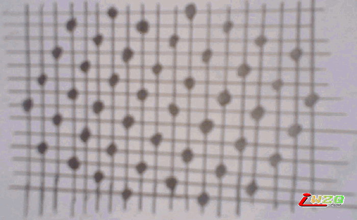

我的五子棋棋道
#1 我的五子棋棋道 作者：有志青年 发表时间：2007-4-21 10:23:49
在很多人的心目中，五子棋是一个小儿科的游戏，确实是这样，我自打小学一年级就玩这个东西了。但在玩的过程中，大家是否感觉到这是一个需要“算计”的游戏。有些高手很厉害，他们一步下完，能够想到好几步，直到把对手算死，这是很恐怖的敌人。不仅仅是表现在下棋这方面，而且还能折射出这个人的为人，中国人确实很会算计别人，这一点相信大家都很有感触，尤其喜欢“阴”人，把自己的棋隐藏起来，而这个是我最反对的。因为下棋是一种娱乐，如果把它作为算计别人而得到快感，我觉得那不是五子棋的根本。更不是做人的根本，难道我们非得算计别人吗？注意，我不仅仅在说下五子棋，也是在说做人的道理。
有人问，在当今世界，充满竞争意识的今天，我们能不相互算计吗？我的回答是：可以。这里提出了我的棋道：防守。俗话说：“害人之心不可有，防人之心不可无。”这里我要说明就是防的艺术。防是有艺术的，防不是单纯的容忍，而是靠防来蓄势，靠蓄势来让对手无计可施。这是防守的至高境界。要防得无形，强得无形。下面以我的阵法为例，请看

仔细看我画的这张草图，会发现如果我一直这样摆黑子，最后出现的情况是棋盘上横、竖、斜将没有连续的五个空位，这是对我的阵法的一个数学上的诠释，所以才能防得住人。它来源于一个数学问题：怎样在棋盘上放最少的子，使得横竖斜没有连续的五个空。我的这张图给出了答案。虽然我不能从数学上证明，但那确实是正确的。有人会不相信，那在真正下棋的时候你能一直这样走吗？答案是，对付只会梅花棋的对手可以一直这么下去。我们把这个比喻成一张网，网内的子都将是废子，这实际上大大削弱了对手的势力，越到后面，对手的棋将越废，直到布满整个棋盘，对手将永远无法赢。当然不会有这样的对手，一般人都会看出这棋的蹊跷，而走我的棋路，但一般发现的时候已经晚了。因为对手不再形成气候。他的棋完全在自己的掌握之中。你可以随便在自己的网边下一子，然后很轻易就能双活三而制服对手。这是一招先防守，后进攻的招数，你也可以不进攻，再防守，这时候，需要补棋的技巧。补棋的宗旨是不让对手有连成一片的可能，从而各个堵死。这就是防守的魅力。我的这套棋路很轻松就能学会，但我也不能很好地把握，究竟在什么时候放哪里。我的感触是，这套棋路虽然有固定的外形，但是没有固定的过程。这是需要一个人领悟的能力的，如果能够灵活运用这套棋法，下棋的时候根本不需要算计对手，我下棋从不算计别人。我也从不动脑，任意地运用，让对手落入自己的网中，从而达到制服对手的目的。这套棋路就像太极拳一样，有固定的外形，但没有固定的步法，随意而变才是五子棋的至高境界。用无来战胜对手，不管对手如何会算计，都逃不出无的掌握。用老子的观点就是，“无为而治”，“无”才是这个世界上最根本的。因为无，所以才会“有”，这就是我的棋道。也是我做人的根本，学会防的艺术，而不是算计别人，因为算计无论如何都逃不出“无”的。
这就是我的人生哲学，我的五子棋棋道。因为我讨厌算计。